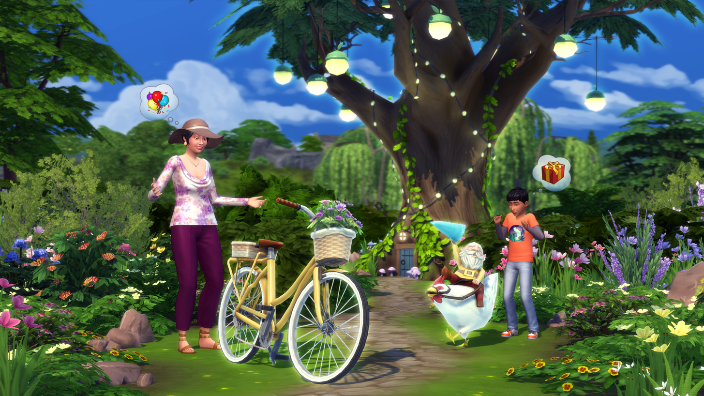

.svg)
Sobre a expansão
Nesta quinta-feira (10) foi anunciada a mais nova expansão de The Sims 4 chamada Vida Campestre, que adiciona uma série de elementos nunca presentes na franquia, como plantações, cultivos e criação de animais de fazenda em uma cidade do interior.
Esse será o 10º pacote de expansão de The Sims 4 e coloca o jogador na cidade de Avelândia do Norte, uma cidade pequena do interior com habitantes tradicionais, em que todo mundo se conhece. Além de explorar o pub e participar de festivais, é possível encontrar rumores sobre lendas locais.
O grande destaque é a variedade de animais disponíveis para criar, incluindo galinha, coelhos, lhamas e vacas. Além disso, uma raposa pode aparecer e atrapalhar a sua criação de animais, exigindo cuidados especiais para evitar a ameaça.

The Sims 4: Vida Campestre chega para Windows, macOS, PS4, PS5, Xbox Series e Xbox One em 22 de julho.
O pacote de expansão Vida Campestre custará, no lançamento, R$ 159 para quem compra no PC (via Origin ou Steam), o valor muda para R$ 199 nas lojas dos consoles PlayStation e Xbox. Assinantes do EA Play pagam R$ 179,10 na Microsoft Store, ao invés do valor cheio.